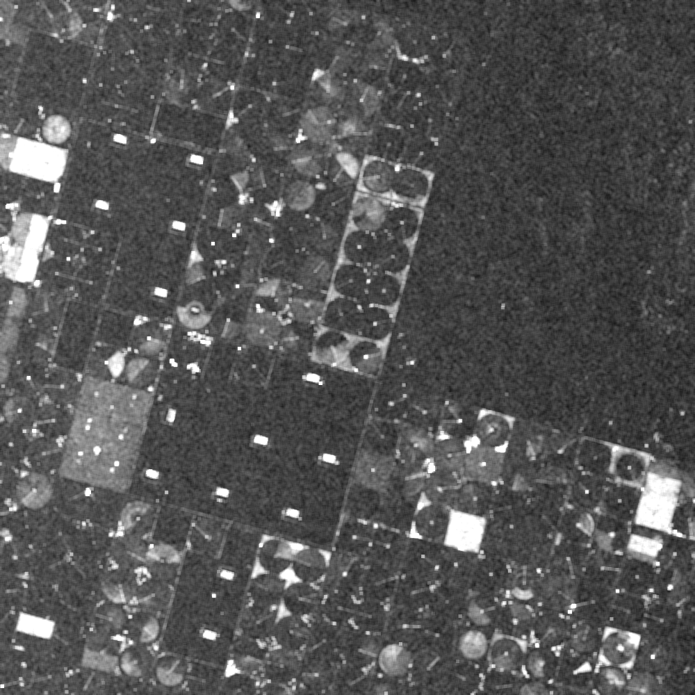
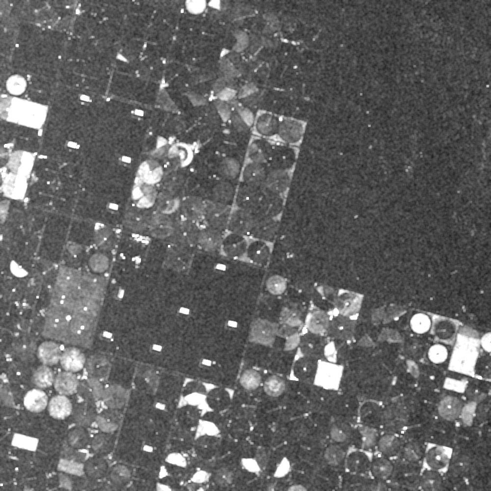
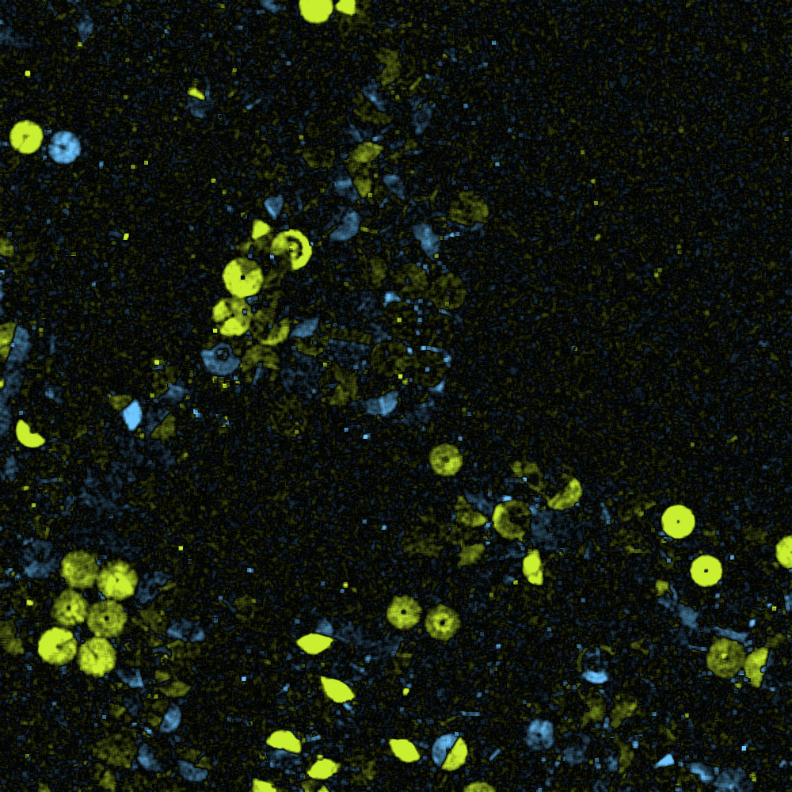
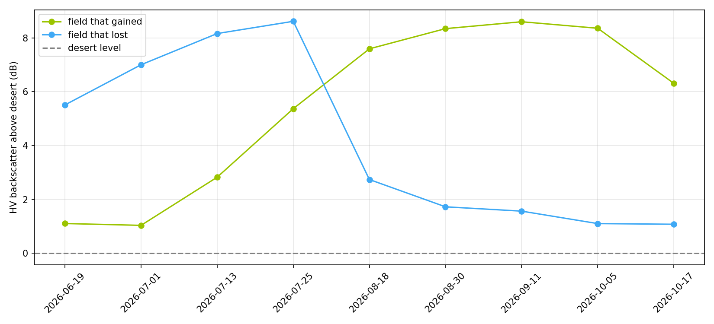

Echofield
Radar from space, watching desert farms switch on and off. Echofield uses NASA-ISRO NISAR radar to show which fields in northern Saudi Arabia grew, which were cut, and when.
The question
Al Jouf is called the breadbasket of Saudi Arabia. Its center-pivot farms draw on groundwater that does not refill, so knowing which fields are active, and when, matters for water and food security.
Can radar show when these farms are active, and show something a normal satellite photo cannot?
Watch the season
Nine NISAR passes over the same 20 km by 20 km area of the Basaita farms, June to October 2026. Brighter means more vegetation. Move the slider or press play.

Before and after
Drag to compare June 19 with October 17.

What changed
The same two dates, subtracted in decibels. The empty desert stays black, which shows the method is not inventing change.

A pixel counts as changed only if it moved more than 1.5 dB, which is three times the noise measured over empty desert (0.50 dB). A field is a connected group of changed pixels larger than 12 hectares.
One field through the season
Each point is the average of every pixel inside one field, measured against the desert on the same date.

- The field that lost dropped by about 5 dB between July 25 and August 18. A drop that fast is consistent with a harvest.
- The field that gained was flat until July 1, then rose steadily to its peak on September 11. Growth is slow, harvest is fast.
Why radar, in a desert with clear skies?
Because radar gives two signals where a photo gives one. HV responds to plant material. HH responds to the ground surface: soil moisture and roughness.

On the field that grew, the surface channel was close to its maximum by July 25. The vegetation channel did not peak until September 11, about seven weeks later. This is consistent with a field being irrigated and prepared first, then the crop building up.
How much farmland is active

Counting pixels more than 4 dB above desert as vegetated, active area in the window grew from 19.4 km² on June 19 to 29.1 km² on October 5. The exact size depends on where that line is drawn, so I tested 3 dB and 5 dB as well. The growth held at all three, between about a third and two thirds.
How it works
- Data: NISAR L-band Level 2 GCOV (provisional), track 71, frame 17, ascending, 20 m pixels, HH and HV.
- Only the farm window is read from NASA's cloud archive, so each date loads in about 20 seconds with no full download.
- Speckle is reduced with a 5 by 5 average, then values are converted to decibels.
- Every date is measured against the same patch of empty desert, which removes small offsets between dates.
- Buildings, which are always very bright in HH, are masked out of the area count.
Limits
- Radar shows how much vegetation there is and when it changes. It cannot tell which crop is growing.
- NISAR passes every 12 days, and the August 6 pass is missing, so an event can only be dated to a window.
- September 23 was recorded without the HV channel and is left out.
- HH responds to growing stalks as well as wet soil, so it is not a pure water signal.
- The products are provisional, and L-band is weak at seeing very young, short crops.
- This is one 20 km by 20 km sample of the Basaita farms, not all of Al Jouf.